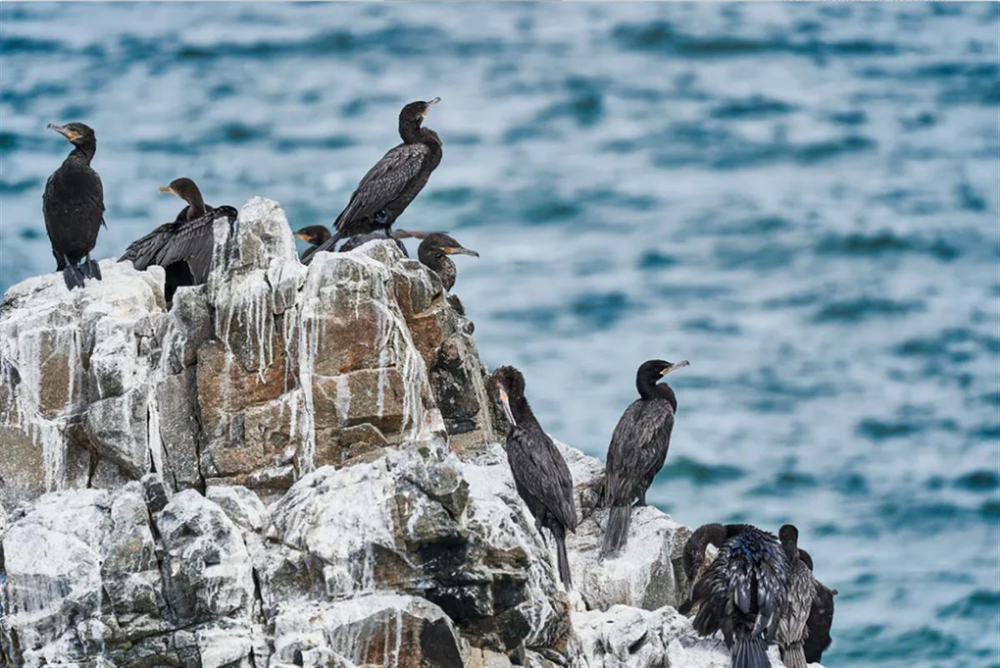
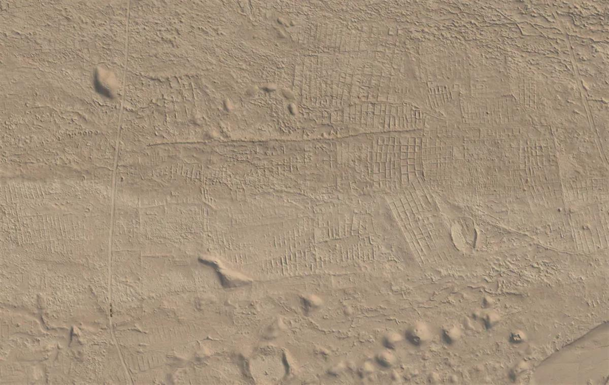
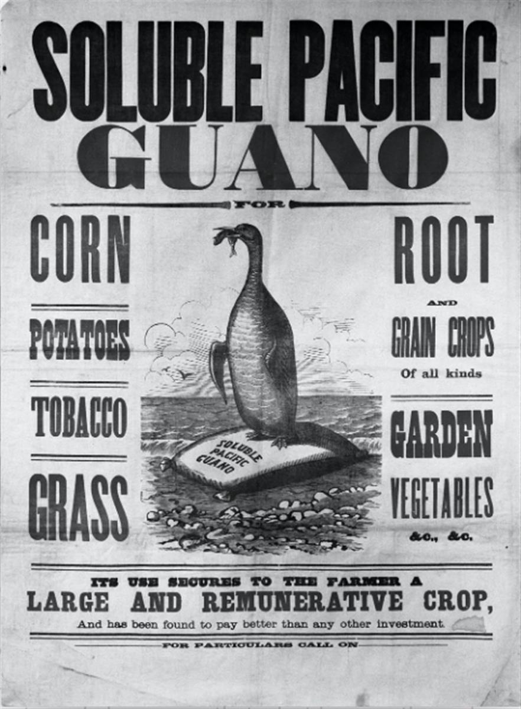

How a pre-Incan civilisation thrived in the Atacama Desert thanks to seabird poo fertiliser
January 27, 2021 3.21pm GMT
Francisca Santana-Sagredo -Assistant lecturer, Universidad Católica de Chile
Julia Lee-Thorp - Emeritus Professor of Archaeological Science, University of Oxford
Rick Schulting - Lecturer in Scientific and Prehistoric Archaeology, University of Oxford
The Atacama Desert of northern Chile is one of the driest places on the planet – in many years it receives no rain whatsoever. For farming communities to survive and thrive they would need water and soil nutrients, both in short supply.
Yet people did live in the Atacama, long before modern technology. The water shortage was addressed using water from oases and complex irrigation systems. For soil nutrients, the solution they hit upon – centuries before the arrival of the Inca in around 1450 – was to bring a super-fertiliser from the coast in the form of seabird excrement, or “guano”.
Map of northern Chile and the Atacama, showing the 14 archaeological sites. Santana-Sagredo et al, Author provided
This was the key finding of our new research in which we analysed the remains of 246 crop and wild plants found in 14 archaeological sites in the Atacama. These plants cover a nearly 3,000 year period spanning several ancient civilisations, followed by the Inca, and finally the period of European colonisation up to 1800.
One way to tell if guano was used to fertilise these ancient plants is to look for the ratios of the isotopes of nitrogen (15N/14N) in the plant remains. These two isotopes differ only in atomic mass, but as a result they behave a little differently in natural systems and so can act as tracers of natural, biochemical processes. We know that even small amounts of seabird guano fertiliser has a massive impact on the nitrogen isotope ratios in modern maize, raising them far above what is possible either naturally or using any other fertiliser. When we looked at archaeological crop remains, including maize, squash and chilli peppers, we found similarly high isotope ratios in plants dating from around AD 1000 and onwards.
Nitrogen isotope ratios found in human skeletons from the region, well-preserved in the arid conditions, also changed dramatically in parallel with the crops. Scientists had earlier thought that this showed that people had eaten fish from the sea. Marine fish are known to have high nitrogen isotope ratios, especially those off the coast of Chile thanks to the very cold and nutrient-rich waters of the Humboldt Current. Our research found that people in ancient Atacama communities did obtain those high nitrogen isotope values from fish – except that it was indirectly, via seabirds who ate the fish and then excreted it as guano, which became fertiliser for crops.

Guano inequality
Our research also found that not everyone seems to have had access to this super-fertiliser. While there were signs that high nitrogen isotope ratios increased markedly in maize kernels from AD1000 onwards, indicating a considerable increase in crop yields and allowing larger settlements, some kernels lacked this evidence. Rather they showed signs of other fertilisers such as green compost or dung from llamas and their relatives.

Skeletons from the same cemeteries and dating to the same period also showed dramatic differences in their nitrogen isotope ratios, suggesting that access to manured crops was not evenly distributed through the community. It might be that some families or clans had privileged links with the coast (some 90km distant) and were able to obtain seabird guano and use it primarily for their own advantage as a source of power and prestige. The desert bloomed – but for some more than for others.

South American guano was once sold around the world.
Guano fertilisation continued into the Inca and colonial periods. In the early 19th century, it became more widely known worldwide as a super-fertiliser and became a significant source of income for Peru (which the Atacama was then part of). Hundreds of thousands of tonnes were shipped overseas each year, mainly to the US and western Europe – it was at this time that guano became known as “white gold”.
Guano’s importance was eclipsed shortly afterwards firstly by a new Atacama Desert resource, saltpetre (sodium nitrate), which was extensively mined, and then by the introduction of cheaper synthetic fertilisers in the early 20th century. Guano fertiliser has undergone resurgence through its use in organic farming, but in Chile it is now forbidden to extract recent guano, and both the guano and the seabirds that produce it are protected by law.
SOURCE: THE CONVERSATION